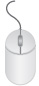

Tema 2. ¿Cómo manejar el sistema operativo Windows?
- Ratón
El ratón está usualmente diseñado con dos o tres botones que realizan operaciones fundamentales tales como las siguientes.


Botón izquierdo

Botón central o rueda